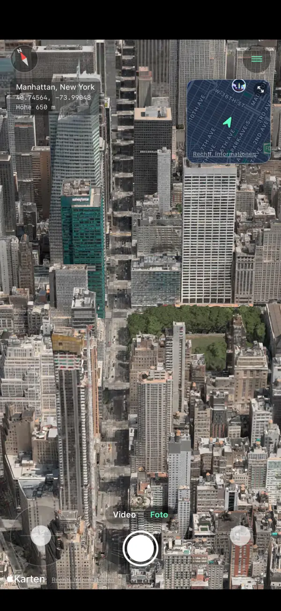
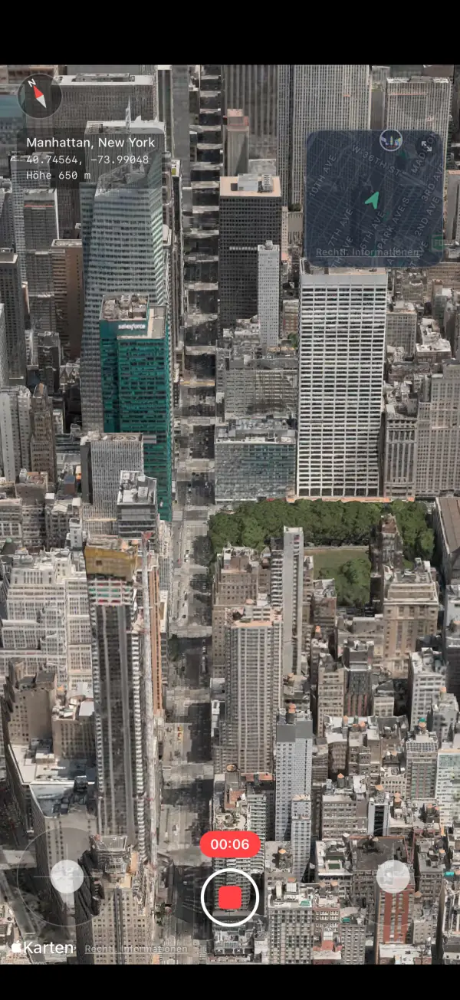
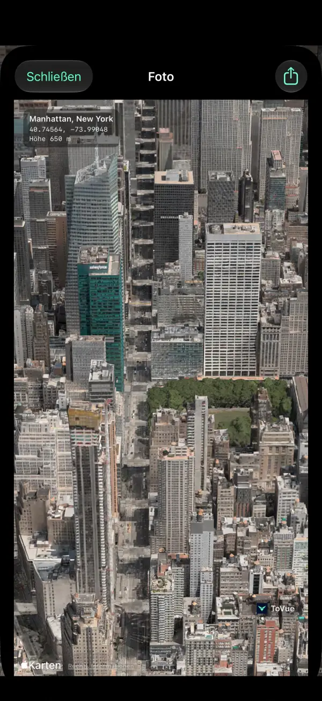
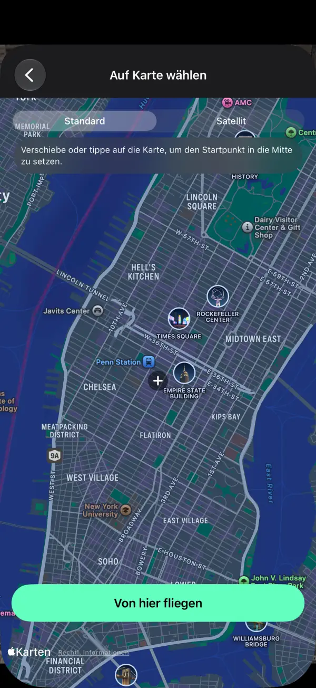
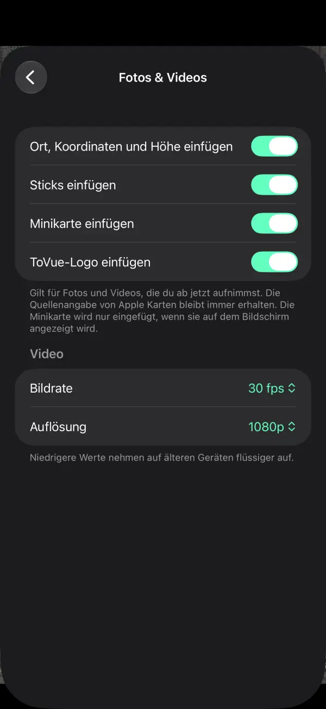

3D-Karten überfliegen – wie eine Drohne.
Fliege auf iPhone und iPad über die Städte der Welt.
Halte die Aussicht als Foto oder Video fest – nur die Karte, ohne Bedienelemente.
 Kostenlos · Ohne Anmeldung · Ohne Standortzugriff
Kostenlos · Ohne Anmeldung · Ohne StandortzugriffWas du tun kannst
Fliege mit den Sticks und halte die Aussicht genau so fest, wie du sie siehst.
Frei fliegen
Steigen, drehen und vorwärtsfliegen mit zwei Sticks auf dem Bildschirm – oder mit einem Finger im Einhandmodus.
Minikarte
Sieh, wo du bist und in welche Richtung du schaust. Tippe darauf, um einen neuen Ort auf der Karte zu wählen.
Video aufnehmen
Wechsle wie in der Kamera-App zwischen Foto und Video und nimm deinen Flug auf.
Fotos nur von der Karte
Nimm die Aussicht ohne Bedienelemente auf, auf Wunsch mit Ort, Koordinaten und Höhe.
Überallhin
Suche einen Ort oder wähle ihn auf der Karte und fliege sofort von dort los.
11 Sprachen
Deutsch, Englisch, Japanisch, Chinesisch, Koreanisch und mehr. Für iPhone und iPad.
Bildschirmfotos





Preise
Alles ist kostenlos nutzbar. Lieber ohne Werbung? Einmal kaufen.
Basis
- Alle Flug-, Foto- und Videofunktionen
- Werbebanner und eine Vollbildanzeige nach dem Ortswechsel
- ToVue-Logo auf Fotos und Videos
Werbung & ToVue-Logo entfernen
- Ein einziger Kauf, kein Abo
- Keinerlei Werbung
- ToVue-Logo auf Fotos und Videos abschaltbar
Gut zu wissen
- ToVue ist ein virtueller Kartenbetrachter. Es steuert keine echte Drohne und ist kein Navigations- oder Flugplanungswerkzeug.
- 3D-Gebäude und Gelände stammen aus Apple Karten und sind je nach Gebiet unterschiedlich detailliert.
- Eine Internetverbindung ist erforderlich. ToVue nutzt nie GPS und fragt nie nach deinem Standort.
- Die Quellenangabe von Apple Karten bleibt auf Fotos und Videos immer erhalten.
Hol dir jetzt die Aussicht von oben.
Kostenlos · Ohne Anmeldung · Ohne Standortzugriff